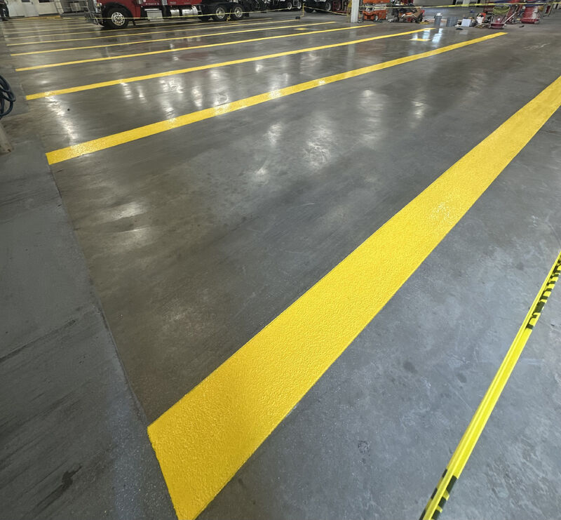
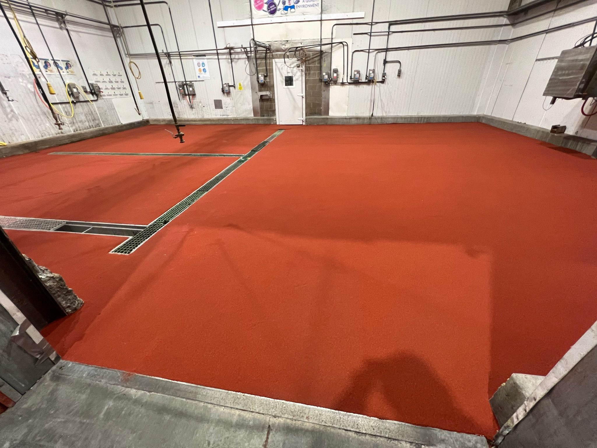

If your plant could benefit from 5S lines on the floor, you are probably right. Walk through most food processing facilities and you will see the same story: faded paint lines, peeling tape, and a production floor where nobody is quite sure where the forklift lane ends and the pedestrian walkway begins. That is not just an organizational problem. It is a safety hazard and a compliance risk.
What 5S Floor Marking Actually Does

5S floor marking comes from lean manufacturing. The concept is straightforward: organize the production floor so anyone can understand traffic flow, equipment zones, and safety boundaries at a glance. No guessing, no training required. You see the lines and you know where to go.
The results are not theoretical. Studies show 5S implementation can lead to a 10 to 30 percent increase in productivity and up to a 70 percent decline in workplace accidents. In one manufacturing case study, processing time dropped from 278 minutes to 164 minutes after 5S was put in place. Those numbers come from better organization, clearer workflow paths, and fewer people crossing into areas where they should not be.
Yellow for traffic lanes. White for equipment zones. Clear, consistent markings that separate forklifts from foot traffic, define sanitation boundaries, and keep everything in its place. When an auditor walks through your facility, properly marked floors communicate that you take safety and organization seriously.
Why Paint and Tape Fail in Food Plants

Most plants use one of two options for floor marking: paint or tape. Both have the same fundamental problem in a food processing environment.
Paint chips and flakes. In a food plant, that is a foreign material risk. Flecks of floor paint ending up near product contact surfaces is the kind of thing that keeps quality managers up at night. Paint also wears quickly under forklift traffic and chemical exposure, so you are repainting lines every few months just to keep them visible.
Tape is worse. It peels up under daily washdowns, curls at the edges when temperatures fluctuate, and creates gaps where moisture and bacteria collect underneath. Forklift wheels catch the edges and pull it up in strips. Within weeks of application, tape lines in a high traffic food plant look like they have been there for years.
Neither option holds up to the combination of chemical washdowns, thermal cycling, and heavy wheeled traffic that food processing floors deal with every single day.
Built Into the Floor, Not Stuck On Top
We install our 5S lines as part of the floor system itself. The markings are integral to the resinous flooring, not a coating or adhesive applied on the surface after the fact. That means they hold up to the same conditions the floor does: daily chemical washdowns, temperature swings from hot production areas to cold storage, and constant forklift and pallet jack traffic.
Because the lines are part of the floor, there is no peeling, no chipping, and no foreign material risk. They maintain their color and visibility for the life of the floor system. No repainting. No replacing tape every quarter. Install it once and it is done.
For facilities running lean programs or preparing for SQF, BRC, or FSMA audits, properly integrated floor markings demonstrate a level of commitment to food safety and workplace organization that paint and tape simply cannot match.
Products Used
- SaniCrete STX - Cementitious urethane flooring system with integrated color line capabilities
- SaniCoat - Resinous coating system for color-coded zone marking